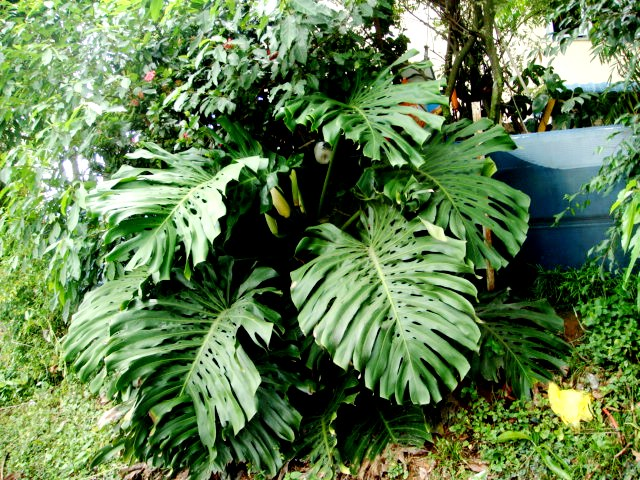
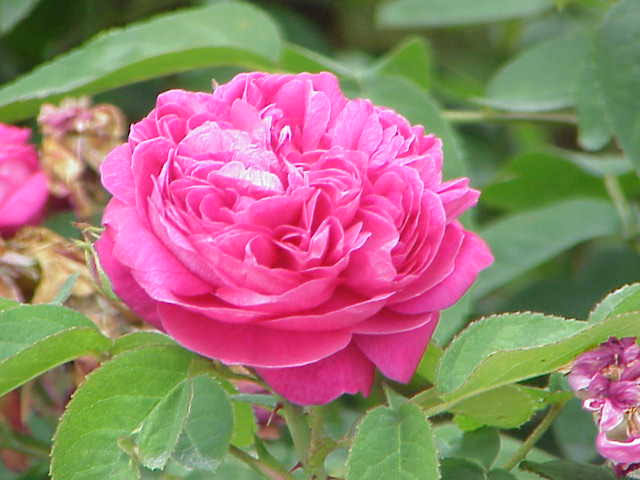

Conservación y Biodiversidad
Albergamos decenas de especies seleccionadas para crear microclimas estables y servir de refugio a insectos polinizadores y aves autóctonas.
Descubre nuestra selección de plantas autóctonas y ornamentales, cultivadas bajo estrictos principios agroecológicos y respeto por la biodiversidad.
Nuestra identidad
Nacido con la vocación de proteger la flora y educar en prácticas medioambientales responsables.
Albergamos decenas de especies seleccionadas para crear microclimas estables y servir de refugio a insectos polinizadores y aves autóctonas.
Utilizamos técnicas de riego eficiente por goteo, recolección de agua pluvial y acolchado orgánico (mulching) para optimizar cada gota de agua.
Prohibición absoluta de fertilizantes sintéticos o pesticidas tóxicos. Todo el sustrato se nutre con compost propio y preparados botánicos naturales.
Especies disponibles
Selecciona la categoría deseada para filtrar el listado de manera interactiva sin recargar la página. Cada planta incluye su ficha técnica descargable en PDF.
Selecciona una categoría de cultivo:

Monstera deliciosa
Especie trepadora de origen tropical célebre por sus amplias hojas perforadas. Purifica el ambiente de interiores luminosos y es sumamente decorativa y resistente.

Sansevieria trifasciata
Una de las plantas de interior más longevas y fáciles de cuidar. Reconocida por la NASA por filtrar sustancias volátiles del aire y liberar oxígeno durante la noche.

Epipremnum aureum
Hermosa planta colgante o trepadora con follaje perenne matizado en amarillo. Prospera con escasa intervención y puede multiplicarse sencillamente por esquejes en agua.

Spartium junceum
Arbusto silvestre mediterráneo con ramas junciformes de verde perenne y profusa floración amarilla perfumada. Excelente fijadora de taludes y hábitat predilecto de abejas.

Lavandula angustifolia
Arbusto aromático perenne de perfume relajante inconfundible. Atrae mariposas y polinizadores beneficiosos mientras repele plagas naturalmente en huertos y jardines.

Bougainvillea spectabilis
Trepadora leñosa mediterránea de espectacular floración viva. Sus hojas modificadas o brácteas aportan un estallido cromático prolongado durante los meses cálidos del año.
Nuestros horticultores
Conoce al equipo humano y técnico que preserva diariamente cada ejemplar del santuario botánico.
18 años de experiencia en botánica aplicada y conservación ecológica.
«Cuidar un jardín no significa doblegar la naturaleza a nuestro capricho, sino aprender a escuchar las necesidades biológicas de cada semilla y facilitarle las condiciones para florecer con salud.»
Días de atención en huerto: Martes y Jueves de 10:00 a 13:00 h.
Solicitar Asesoría PersonalizadaHablemos de plantas
¿Tienes dudas sobre los cuidados de alguna planta de nuestro catálogo o deseas programar una visita? Envíanos un mensaje y te responderemos a la brevedad.